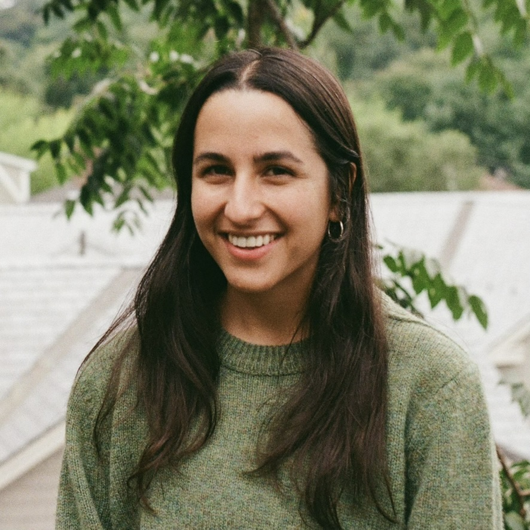

My research focuses on responsible data and evaluation practices for generative AI systems, using measurement and construct validity as a lens. You can view my CV here, check out my Google Scholar here, follow me on Twitter @MeeraDesai18 or Bluesky @madesai.bsky.social or email me at madesai@umich.edu.
Last updated September 9, 2025.